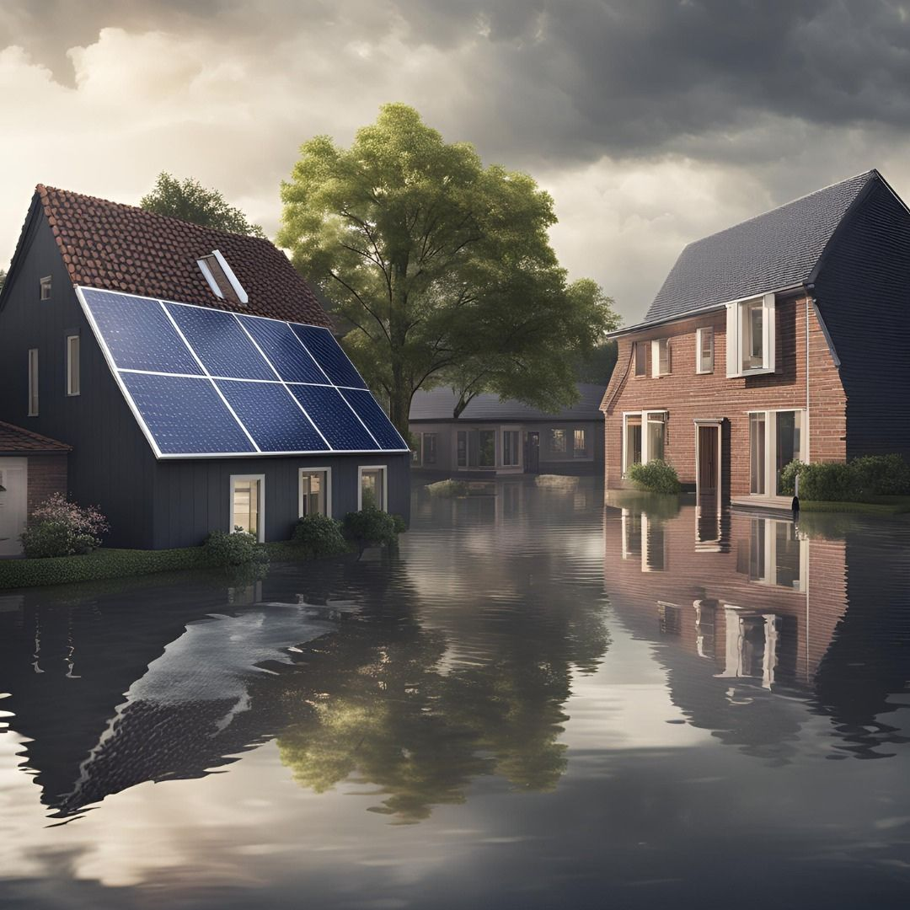

In the face of natural disasters like floods, the ability to maintain power is crucial. Solar panels combined with DC smart grids provide an innovative solution for energy independence during such crises. While traditional homes rely on the main electricity grid—leaving them vulnerable during power outages—homes equipped with solar panels and DC smart grids can sustain themselves, ensuring a continued energy supply. The DC smart grid enables efficient, localized energy distribution, minimizing dependence on external sources and improving the overall resilience of a household. This system allows the home to operate autonomously, even when the wider electrical grid is down, making it an essential component of modern energy solutions for crisis scenarios. Through this combination, solar energy and DC smart grids offer a sustainable, reliable, and independent power solution, empowering homeowners to be more self-sufficient and prepared during emergencies.
